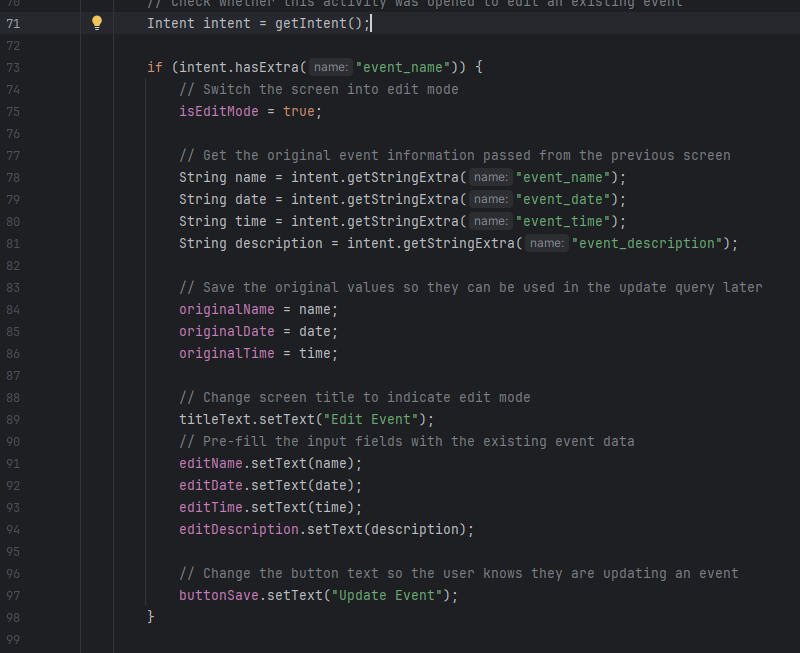
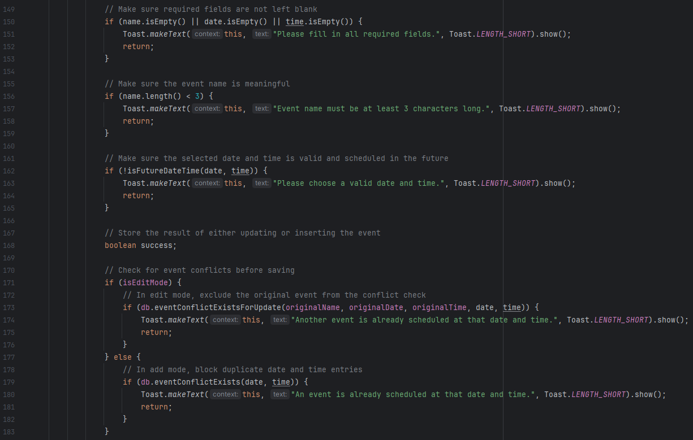
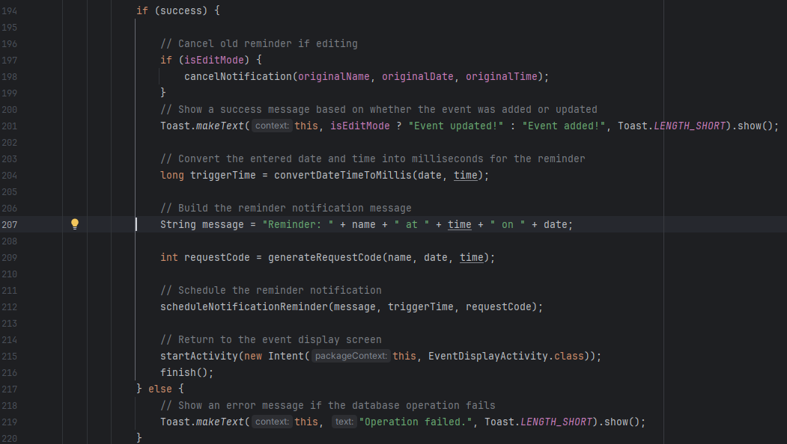

Artifact 1: Software Design and Engineering
Event Tracking Android Application
This artifact is an Event Tracking Android Application originally developed in CS 360: Mobile Architecture and Programming. I selected this artifact because it demonstrates my ability to design and improve a mobile application using Java, Android Studio, and SQLite.
For my enhancement, I focused on improving the event management workflow by adding event editing, stronger input validation, improved notification handling, and event conflict detection.
Artifact Overview
The original application allowed users to create accounts, log in, add events, view events, and receive notifications for scheduled reminders. While the original project was functional, it had several limitations. Users could create events but could not edit them, validation was limited, and scheduled notifications were not always properly synchronized when an event was changed or deleted.
The enhanced version improves the reliability and usability of the system by allowing event editing, preventing invalid data entry, detecting duplicate event scheduling conflicts, and ensuring notifications are correctly updated or removed when event data changes.
Enhancement Highlights
- Added event editing functionality using the existing Add Event screen
- Improved input validation for required fields and future date/time checks
- Implemented event conflict detection to prevent duplicate scheduling
- Improved notification handling so reminders are updated and canceled correctly
Selected Code Screenshots
The screenshots below highlight key improvements made to the artifact during the enhancement process.
Figure 1: Edit Mode and Event Update Logic

Figure 2: Input Validation and Conflict Detection

Figure 3: Notification Scheduling and Cancellation Improvements

Narrative
Artifact Description
The artifact I selected for this enhancement is my Event Tracking Android Application, which I originally developed in CS 360: Mobile Architecture and Programming. The purpose of this application is to allow users to create, view, and manage events, as well as receive notifications as reminders for scheduled events. The application includes features such as account login, event creation, and notification scheduling. For this milestone, I focused on enhancing the event management functionality to improve usability, data validation, and overall system reliability.
Justification and Enhancements
I selected this artifact for my ePortfolio because it demonstrates my ability to design and implement a functional mobile application using Android Studio. It highlights my understanding of user interface design, database interaction, and event-driven programming. Additionally, this artifact provided a strong foundation for applying software engineering improvements through enhancement rather than building from scratch.
For this milestone, I implemented several meaningful enhancements that significantly improved the functionality and reliability of the application. The first major enhancement was the addition of event editing functionality. This allows users to modify existing events instead of deleting and recreating them, improving usability and efficiency. I reused the existing event creation interface and added logic to detect edit mode, pre-fill fields, and update records in the database.
The second enhancement focused on improving input validation. I added checks to ensure that required fields are not empty, that event names meet a minimum length requirement, and that the selected date and time are valid and scheduled in the future. This prevents invalid or unrealistic data from being stored and improves the overall user experience.
The third enhancement was the implementation of event conflict detection. The application now checks whether an event already exists at the same date and time before allowing a new event to be created or updated. This helps prevent duplicate scheduling and demonstrates improved data integrity and logical validation.
Another important improvement was made to the notification system. I implemented a consistent method for generating unique identifiers for scheduled notifications, which allowed me to properly cancel and reschedule reminders when events are updated or deleted. This resolved issues where outdated notifications would still trigger after changes were made.
Originally, my enhancement plan also included implementing password hashing for improved security. However, during development I chose to prioritize enhancements that directly improved the core functionality of event management, such as editing, validation, and notification handling. These changes provided a more impactful improvement for this milestone, while password hashing remains a potential future enhancement focused on security.
Course Outcomes and Updates
Through these enhancements, I was able to make strong progress toward several course outcomes. I demonstrated the ability to design and evaluate computing solutions by improving the application’s functionality and handling edge cases such as invalid input and scheduling conflicts. I also demonstrated the use of appropriate tools and techniques in computing practices by working with Android Studio, SQLite databases, and system services such as AlarmManager.
Additionally, I showed progress toward developing a security mindset by identifying potential weaknesses in the application, such as improper input handling and inconsistent notification behavior, and implementing solutions to address them. While I did not implement password hashing in this milestone, I recognize its importance and may incorporate it in future iterations.
Reflection on the Process
Enhancing this artifact was a valuable experience because it required me to revisit an existing project and improve it rather than simply building something new. This process helped me better understand how software evolves over time and how small changes can significantly improve usability and reliability.
One of the biggest things I learned was the importance of maintaining consistency across different parts of the system. For example, when working on the notification system, I had to ensure that the same identifier was used when scheduling and canceling reminders. Without this consistency, the system would behave unpredictably.
Another key learning experience was implementing validation and conflict detection. These improvements required me to think beyond basic functionality and consider real-world usage scenarios, such as preventing duplicate events or invalid input. This helped me develop a more defensive and user-focused approach to programming.
One challenge I faced was managing how different components of the application interacted with each other, especially between the user interface, database, and notification system. Fixing issues such as duplicate notifications required careful debugging and a better understanding of how Android services work.
Overall, this enhancement process strengthened my ability to analyze, improve, and maintain an existing codebase. It also reinforced the importance of planning, testing, and iterative development in software engineering.
Files
Use the links below to access the original and enhanced versions of this artifact.